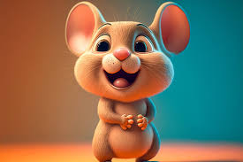

About My Little Mouse
She is a small, sweet mouse with a glass that its frame is transparent. She is very kind and has a giving personality.
The Little Mouse Laughs
The Little Mouse's Characteristics:
- Her teeth are awesome.
- Her smile lights the entire room.
- Her eyes are prettier than a rainy sky.
Our Little Mouse and Her Family
Our little mouse has a wonderful family. There is a mother mouse, a father mouse, and of course a brother mouse who looks like our little mouse. Click on the link below to read more about mice in general: